The precrec package provides accurate computations of ROC and Precision-Recall curves.
The evalmod function calculates ROC and Precision-Recall curves and returns an S3 object.
library(precrec)
# Load a test dataset
data(P10N10)
# Calculate ROC and Precision-Recall curves
sscurves <- evalmod(scores = P10N10$scores, labels = P10N10$labels)The R language specifies S3 objects and S3 generic functions as part of the most basic object-oriented system in R. The precrec package provides eight S3 generics for the S3 object created by the evalmod function.
| S3 generic | Package | Description |
|---|---|---|
| base | Print the calculation results and the summary of the test data | |
| as.data.frame | base | Convert a precrec object to a data frame |
| plot | graphics | Plot performance evaluation measures |
| autoplot | ggplot2 | Plot performance evaluation measures with ggplot2 |
| fortify | ggplot2 | Prepare a data frame for ggplot2 |
| auc | precrec | Make a data frame with AUC scores |
| part | precrec | Set partial curves and calculate AUC scores |
| pauc | precrec | Make a data frame with pAUC scores |
plot functionThe plot function outputs ROC and Precision-Recall curves
# Show ROC and Precision-Recall plots
plot(sscurves)
# Show a Precision-Recall plot
plot(sscurves, "PRC")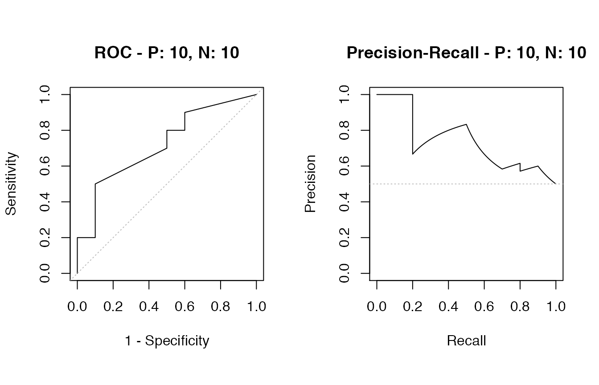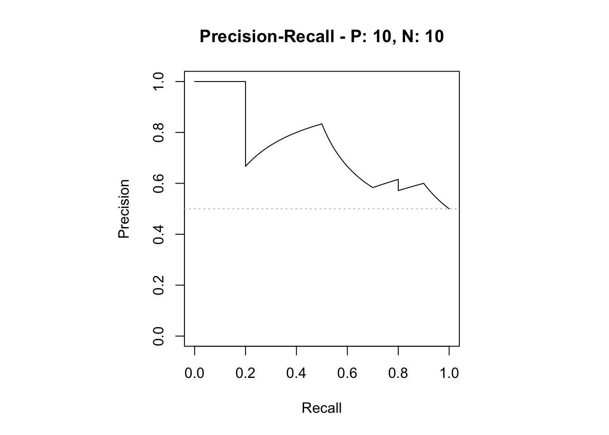
autoplot functionThe autoplot function outputs ROC and Precision-Recall curves by using the ggplot2 package.
# The ggplot2 package is required
library(ggplot2)
# Show ROC and Precision-Recall plots
autoplot(sscurves)
# Show a Precision-Recall plot
autoplot(sscurves, "PRC")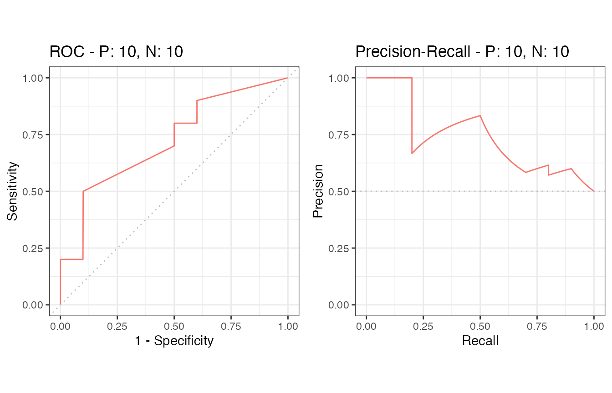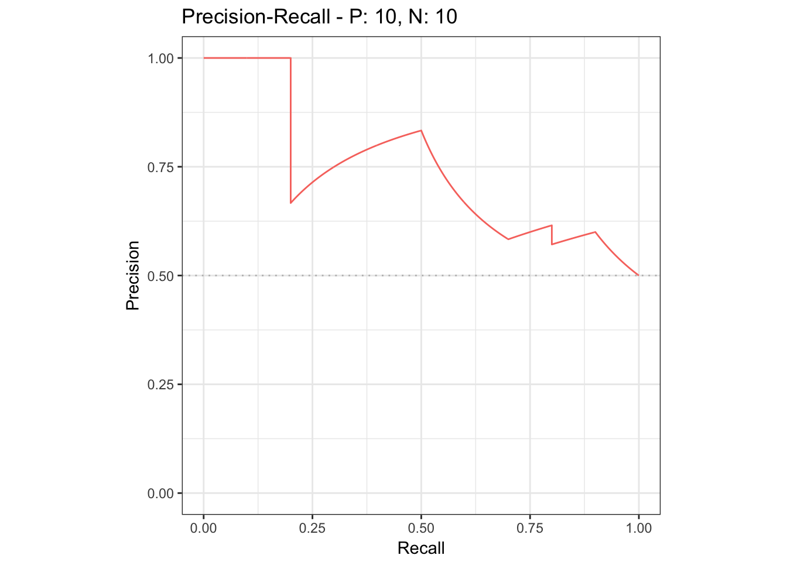
auc functionThe auc function outputs a data frame with the AUC (Area Under the Curve) scores.
# Get a data frame with AUC scores
aucs <- auc(sscurves)
# Use knitr::kable to display the result in a table format
knitr::kable(aucs)| modnames | dsids | curvetypes | aucs |
|---|---|---|---|
| m1 | 1 | ROC | 0.7200000 |
| m1 | 1 | PRC | 0.7397716 |
# Get AUCs of Precision-Recall
aucs_prc <- subset(aucs, curvetypes == "PRC")
knitr::kable(aucs_prc)| modnames | dsids | curvetypes | aucs | |
|---|---|---|---|---|
| 2 | m1 | 1 | PRC | 0.7397716 |
as.data.frame functionThe as.data.frame function converts a precrec object to a data frame.
# Convert sscurves to a data frame
sscurves.df <- as.data.frame(sscurves)
# Use knitr::kable to display the result in a table format
knitr::kable(head(sscurves.df))| x | y | modname | dsid | type |
|---|---|---|---|---|
| 0.000 | 0.0 | m1 | 1 | ROC |
| 0.000 | 0.1 | m1 | 1 | ROC |
| 0.000 | 0.2 | m1 | 1 | ROC |
| 0.001 | 0.2 | m1 | 1 | ROC |
| 0.002 | 0.2 | m1 | 1 | ROC |
| 0.003 | 0.2 | m1 | 1 | ROC |
The precrec package provides four functions for data preparation.
| Function | Description |
|---|---|
| join_scores | Join scores of multiple models into a list |
| join_labels | Join observed labels of multiple test datasets into a list |
| mmdata | Reformat input data for performance evaluation calculation |
| create_sim_samples | Create random samples for simulations |
join_scores functionThe join_scores function combines multiple score datasets.
s1 <- c(1, 2, 3, 4)
s2 <- c(5, 6, 7, 8)
s3 <- matrix(1:8, 4, 2)
# Join two score vectors
scores1 <- join_scores(s1, s2)
# Join two vectors and a matrix
scores2 <- join_scores(s1, s2, s3)join_labels functionThe join_labels function combines multiple score datasets.
l1 <- c(1, 0, 1, 1)
l2 <- c(1, 0, 1, 1)
l3 <- c(1, 0, 1, 0)
# Join two label vectors
labels1 <- join_labels(l1, l2)
labels2 <- join_labels(l1, l3)create_sim_samples functionThe create_sim_samples function is useful to make a random sample dataset with different performance levels.
| Level name | Description |
|---|---|
| random | Random |
| poor_er | Poor early retrieval |
| good_er | Good early retrieval |
| excel | Excellent |
| perf | Perfect |
| all | All of the above |
# A dataset with 10 positives and 10 negatives for the random performance level
samps1 <- create_sim_samples(1, 10, 10, "random")
# A dataset for five different performance levels
samps2 <- create_sim_samples(1, 10, 10, "all")
# A dataset with 20 samples for the good early retrieval performance level
samps3 <- create_sim_samples(20, 10, 10, "good_er")
# A dataset with 20 samples for five different performance levels
samps4 <- create_sim_samples(20, 10, 10, "all")The evalmod function calculate performance evaluation for multiple models when multiple model names are specified with the mmdata or the evalmod function.
There are several ways to create a dataset with the mmdata function for multiple models.
# Use a list with multiple score vectors and a list with a single label vector
msmdat1 <- mmdata(scores1, labels1)
# Explicitly specify model names
msmdat2 <- mmdata(scores1, labels1, modnames = c("mod1", "mod2"))
# Use a sample dataset created by the create_sim_samples function
msmdat3 <- mmdata(samps2[["scores"]], samps2[["labels"]], modnames = samps2[["modnames"]])The evalmod function automatically detects multiple models.
# Calculate ROC and Precision-Recall curves for multiple models
mscurves <- evalmod(msmdat3)All the S3 generics are effective for the S3 object generated by this approach.
# Show ROC and Precision-Recall curves with the ggplot2 package
autoplot(mscurves)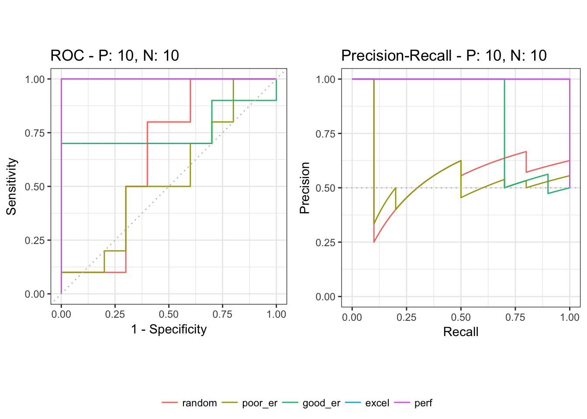
as.data.frame functionThe as.data.frame function also works with this object.
# Convert mscurves to a data frame
mscurves.df <- as.data.frame(mscurves)
# Use knitr::kable to display the result in a table format
knitr::kable(head(mscurves.df))| x | y | modname | dsid | type |
|---|---|---|---|---|
| 0.000 | 0.0 | random | 1 | ROC |
| 0.000 | 0.1 | random | 1 | ROC |
| 0.001 | 0.1 | random | 1 | ROC |
| 0.002 | 0.1 | random | 1 | ROC |
| 0.003 | 0.1 | random | 1 | ROC |
| 0.004 | 0.1 | random | 1 | ROC |
The evalmod function calculate performance evaluation for multiple test datasets when different test dataset IDs are specified with the mmdata or the evalmod function.
There are several ways to create a dataset with the mmdata function for multiple test datasets.
The evalmod function automatically detects multiple test datasets.
# Calculate curves for multiple test datasets and keep all the curves
smcurves <- evalmod(smmdat2, raw_curves = TRUE)All the S3 generics are effective for the S3 object generated by this approach.
# Show an average Precision-Recall curve with the 95% confidence bounds
autoplot(smcurves, "PRC")
# Show raw Precision-Recall curves
autoplot(smcurves, "PRC", raw_curves = TRUE)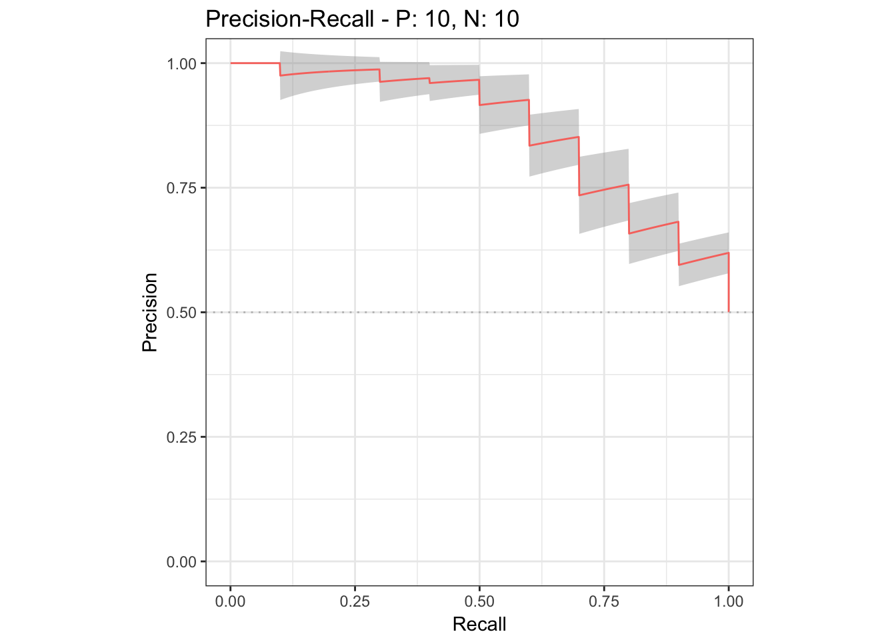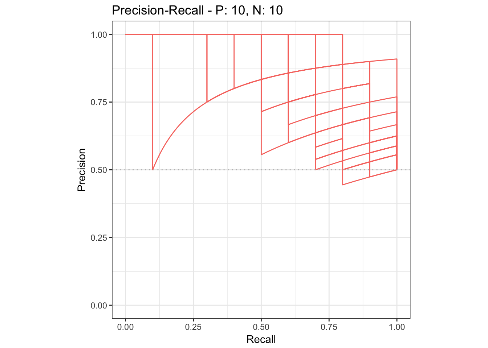
as.data.frame functionThe as.data.frame function also works with this object.
# Convert smcurves to a data frame
smcurves.df <- as.data.frame(smcurves)
# Use knitr::kable to display the result in a table format
knitr::kable(head(smcurves.df))| x | y | ymin | ymax | modname | type |
|---|---|---|---|---|---|
| 0.000 | 0.00 | 0.0000000 | 0.0000000 | m1 | ROC |
| 0.000 | 0.49 | 0.4036257 | 0.5763743 | m1 | ROC |
| 0.001 | 0.49 | 0.4036257 | 0.5763743 | m1 | ROC |
| 0.002 | 0.49 | 0.4036257 | 0.5763743 | m1 | ROC |
| 0.003 | 0.49 | 0.4036257 | 0.5763743 | m1 | ROC |
| 0.004 | 0.49 | 0.4036257 | 0.5763743 | m1 | ROC |
The evalmod function calculate performance evaluation for multiple models and multiple test datasets when different model names and test dataset IDs are specified with the mmdata or the evalmod function.
There are several ways to create a dataset with the mmdata function for multiple models and multiple datasets.
# Specify model names and test dataset IDs names
mmmdat1 <- mmdata(scores1, labels2, modnames= c("mod1", "mod2"), dsids = c(1, 2))
# Use a sample dataset created by the create_sim_samples function
mmmdat2 <- mmdata(samps4[["scores"]], samps4[["labels"]],
modnames = samps4[["modnames"]], dsids = samps4[["dsids"]])The evalmod function automatically detects multiple models and multiple test datasets.
# Calculate curves for multiple models and multiple test datasets
mmcurves <- evalmod(mmmdat2)All the S3 generics are effective for the S3 object generated by this approach.
# Show average Precision-Recall curves
autoplot(mmcurves, "PRC")
# Show average Precision-Recall curves with the 95% confidence bounds
autoplot(mmcurves, "PRC", show_cb = TRUE)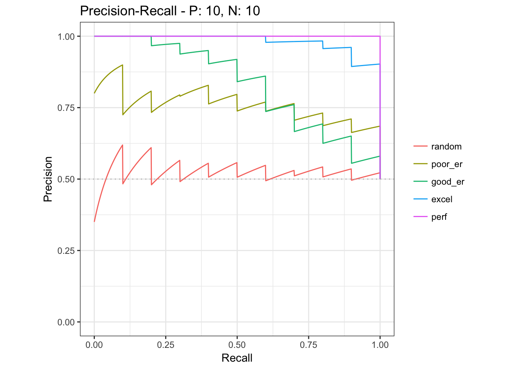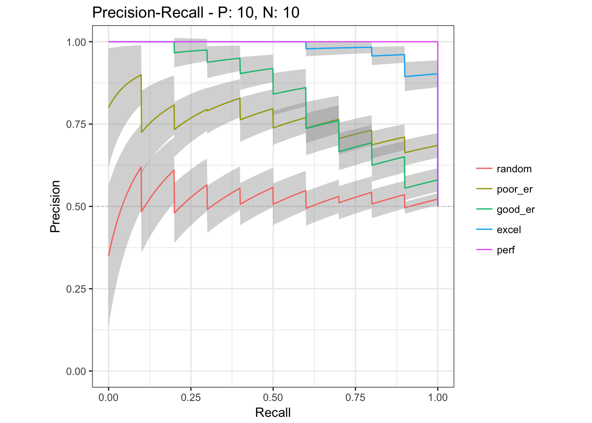
as.data.frame functionThe as.data.frame function also works with this object.
# Convert smcurves to a data frame
mmcurves.df <- as.data.frame(mmcurves)
# Use knitr::kable to display the result in a table format
knitr::kable(head(mmcurves.df))| x | y | ymin | ymax | modname | type |
|---|---|---|---|---|---|
| 0.000 | 0.000 | 0.0000000 | 0.0000000 | random | ROC |
| 0.000 | 0.095 | 0.0468332 | 0.1431668 | random | ROC |
| 0.001 | 0.095 | 0.0468332 | 0.1431668 | random | ROC |
| 0.002 | 0.095 | 0.0468332 | 0.1431668 | random | ROC |
| 0.003 | 0.095 | 0.0468332 | 0.1431668 | random | ROC |
| 0.004 | 0.095 | 0.0468332 | 0.1431668 | random | ROC |
The evalmod function also calculates basic evaluation measures - error, accuracy, specificity, sensitivity, and precision.
| Measure | Description |
|---|---|
| error | Error rate |
| accuracy | Accuracy |
| specificity | Specificity, TNR, 1 - FPR |
| sensitivity | Sensitivity, TPR, Recall |
| precision | Precision, PPV |
| mcc | Matthews correlation coefficient |
| fscore | F-score |
The mode = "basic" option makes the evalmod function calculate the basic evaluation measures instead of performing ROC and Precision-Recall calculations.
# Calculate basic evaluation measures
mmpoins <- evalmod(mmmdat2, mode = "basic")All the S3 generics except for auc, part and pauc are effective for the S3 object generated by this approach.
# Show normalized ranks vs. error rate and accuracy
autoplot(mmpoins, c("error", "accuracy"))
# Show normalized ranks vs. specificity, sensitivity, and precision
autoplot(mmpoins, c("specificity", "sensitivity", "precision"))
# Show normalized ranks vs. Matthews correlation coefficient and F-score
autoplot(mmpoins, c("mcc", "fscore"))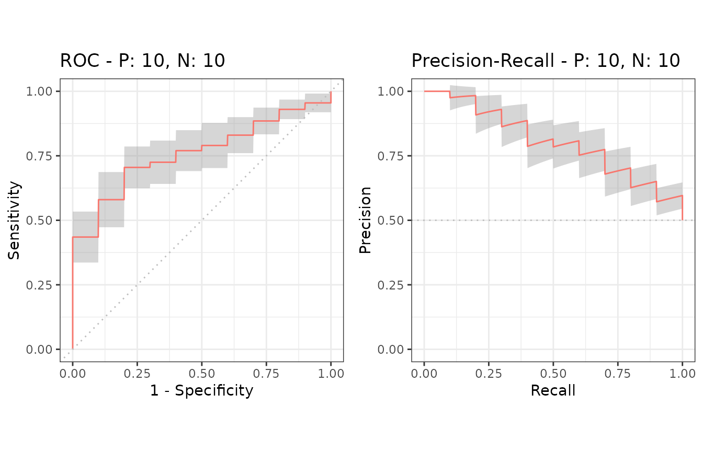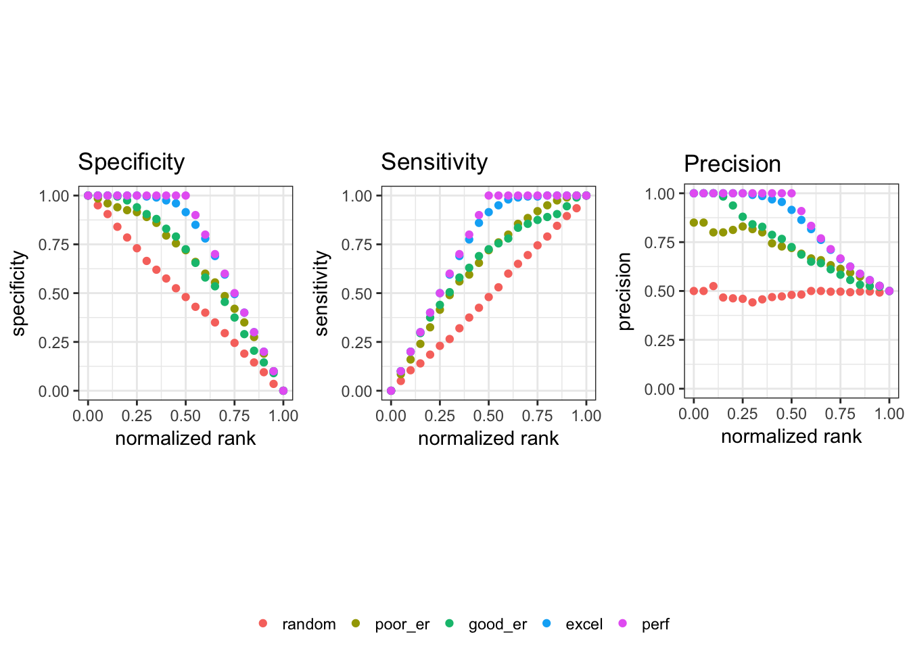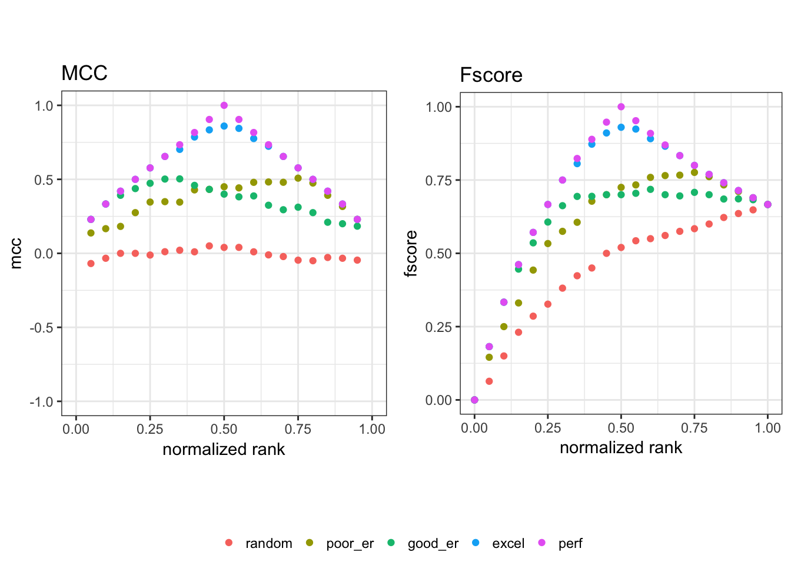
In addition to the basic measures, the autoplot function can plot normalized ranks vs. scores and labels.
# Show normalized ranks vs. scores and labels
autoplot(mmpoins, c("score", "label"))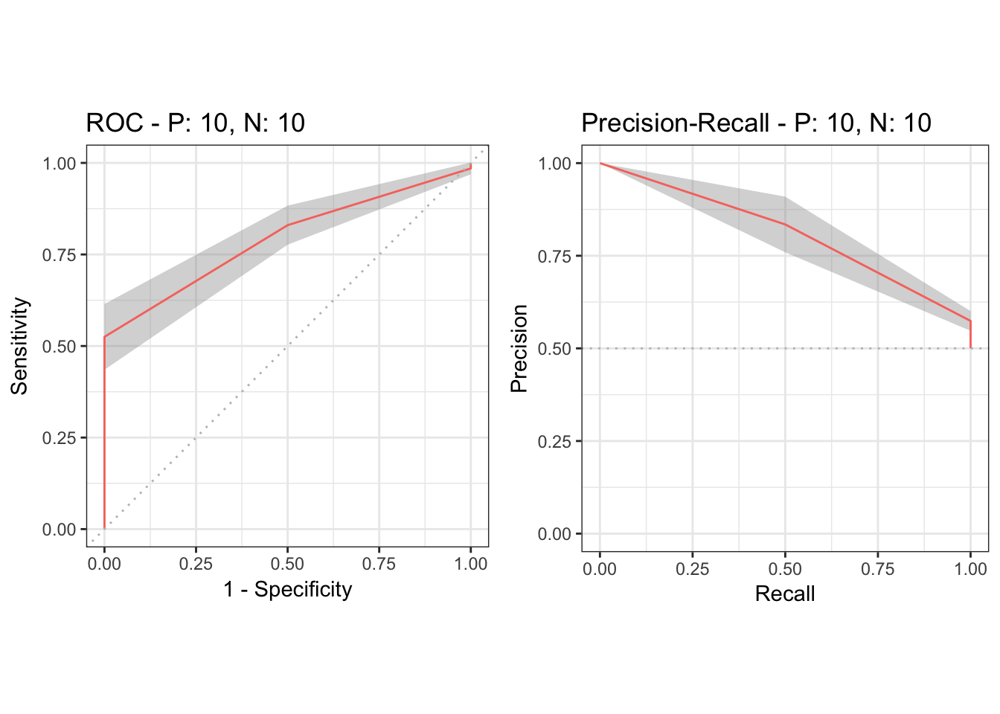
as.data.frame functionThe as.data.frame function also works for the precrec objects of the basic measures.
# Convert mmpoins to a data frame
mmpoins.df <- as.data.frame(mmpoins)
# Use knitr::kable to display the result in a table format
knitr::kable(head(mmpoins.df))| x | y | ymin | ymax | modname | type |
|---|---|---|---|---|---|
| 0.00 | NA | NA | NA | random | score |
| 0.05 | 1.7149170 | 1.4797944 | 1.9500395 | random | score |
| 0.10 | 1.3707314 | 1.1712463 | 1.5702165 | random | score |
| 0.15 | 1.0185653 | 0.8627331 | 1.1743976 | random | score |
| 0.20 | 0.8883452 | 0.7191876 | 1.0575028 | random | score |
| 0.25 | 0.7661082 | 0.6109877 | 0.9212287 | random | score |
The part function calculates partial AUCs and standardized partial AUCs of both ROC and precision-recall curves. Standardized pAUCs are standardized to the range between 0 and 1.
It requires an S3 object produced by the evalmod function and uses xlim and ylim to specify the partial area of your choice. The pauc function outputs a data frame with the pAUC scores.
# Calculate ROC and Precision-Recall curves
curves <- evalmod(scores = P10N10$scores, labels = P10N10$labels)
# Calculate partial AUCs
curves.part <- part(curves, xlim = c(0.0, 0.25))
# Retrieve a dataframe of pAUCs
paucs.df <- pauc(curves.part)
# Use knitr::kable to display the result in a table format
knitr::kable(paucs.df)| modnames | dsids | curvetypes | paucs | spaucs |
|---|---|---|---|---|
| m1 | 1 | ROC | 0.1006250 | 0.4025000 |
| m1 | 1 | PRC | 0.2345849 | 0.9383396 |
All the S3 generics are effective for the S3 object generated by this approach.
# Show ROC and Precision-Recall curves
autoplot(curves.part)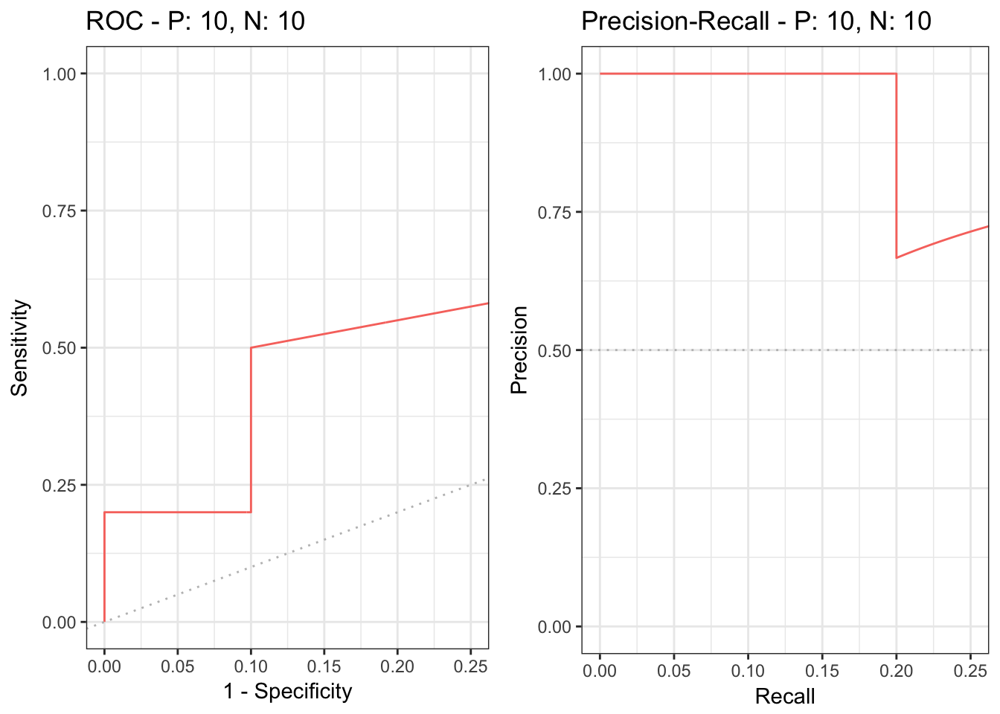
It is easy to simulate various scenarios, such as balanced vs. imbalanced datasets, by using the evalmod and create_sim_samples functions.
# Balanced dataset
samps5 <- create_sim_samples(100, 100, 100, "all")
simmdat1 <- mmdata(samps5[["scores"]], samps5[["labels"]],
modnames = samps5[["modnames"]], dsids = samps5[["dsids"]])
# Imbalanced dataset
samps6 <- create_sim_samples(100, 25, 100, "all")
simmdat2 <- mmdata(samps6[["scores"]], samps6[["labels"]],
modnames = samps6[["modnames"]], dsids = samps6[["dsids"]])The evalmod function automatically detects multiple models and multiple test datasets.
See our website - Classifier evaluation with imbalanced datasets - for useful tips for performance evaluation on binary classifiers. In addition, we have summarized potential pitfalls of ROC plots with imbalanced datasets. See our paper - The Precision-Recall Plot Is More Informative than the ROC Plot When Evaluating Binary Classifiers on Imbalanced Datasets - for more details.